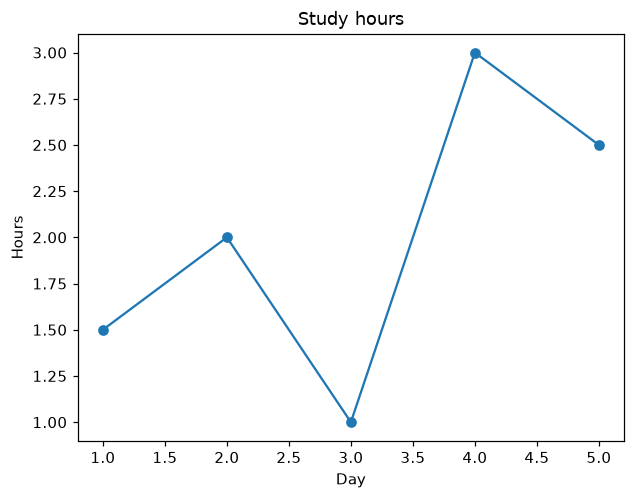

16.1 กราฟแรก
import matplotlib.pyplot as plt แล้ววาดด้วย plt.plot(x, y) ใส่ชื่อกราฟและชื่อแกน แล้ว plt.show() เพื่อเปิดหน้าต่างกราฟ
import matplotlib.pyplot as plt
days = [1, 2, 3, 4, 5]
hours = [1.5, 2, 1, 3, 2.5]
plt.plot(days, hours, marker="o")
plt.title("Study hours")
plt.xlabel("Day")
plt.ylabel("Hours")
plt.show()